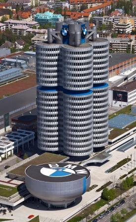

През 1913г. инженерът Карл Фридрих Рап създава фирмата “Rapp Motorenwerke”. Той помещава новосъздадената компания в бивша фабрика за велосипеди край Мюнхен. Рап започва конструирането на собствен авиационен двигател, но среща непреодолими проблеми с вибрациите и е принуден да започне производството на малки самолети с двигател по лиценз на компанията “Daimler”. Междувременно в близост до Рап се е установил Густав Ото, син на изобретателя на четиритактовия двигател с вътрешно горене. Ото развива успешен бизнес като производител на малки въздухоплавателни средства. Рап сключва договори с Прусия и Австро-Унгария за производството на 25 двигателя но инженерите му срещат проблеми с надеждността и той закупува четирицилиндрови двигатели с водно охлаждане от Ото. През следващите месеци компаниите на Рап и Ото се сливат в обща фирма”Bayerishe Flugzeug Werke”. На 7март 1916 година те преименуват фирмата на “Bayerishe Motoren Werke”. Това е и официалната рождена дата на марката BMW. През 1917 г. BMW е закупена от австрийският инженер Франц-Йозеф Поп, който осигурява военни поръчки и привлича инвеститори, разширявайки малката дотогава фирма. Резултатите не закъсняват и още същата година започва производството на първият самолетен двигател на BMW означен “IIIa” проектиран от главният фирмен инженер Макс Фриц. Той се отличавал с уникален за времето си карбуратор работещ на пълна мощност дори при голяма височина на летене. Германското правителство е впечатлено от двигателя и прави поръчка за неговото производство. През 1918г. снабден с “IIIa”изпитателен биплан се издига до 5000метра височина. Този рекорд популяризира продукцията на BMW и развива компанията като водещ производител на самолетни двигатели. За компанията обаче предстоят тежки времена. След края на Първата Световна Война е подписан Версайският договор, който забранява на германската промишленост производството на самолети и двигатели за тях. Доскорошен водач в самолетната индустрия BMW е принудена да преориентира изцяло производството си. Изправена пред фалит фирмата произвежда двигатели за лодки, спирачки за локомотиви и дори офис мебели и тезгяхи. Поп и Фриц обаче не изоставят своите проекти. В пълна секретност те работят по наследника на “IIIa” и скоро резултатът е на лице - появява се “тип IV”. С този двигател през 1919г. пилотът Франц Дзелано Димер поставят рекорд за височина достигайки 9670 метра. Поради неблагоприятните условия за немската промишленост, БМВ се преориентира в конструирането на мотоциклетни двигатели. През 1920г. е въведено и официалното лого на компанията използвано и до днес. През същата година е проектиран и двуцилиндровия боксер двигател за мотоциклети - М2Б15. Tой задвижвал мотоциклета „Виктория“ произвеждан в Нюрнберг. През 1923г. компанията конструира първият си собствен мотоциклет – R32. Той става сензация на автосалона в Берлин. С 3100 продадени бройки моделът става изключително популярен. Наследникът му – R37 показан през 1925г. е два пъти по-мощен и печели всички немски шампионати до 500cc. Впечатляващите успехи тласкат BMW към следващата решителна крачка. През 1927г. компанията закупува автомобилният завод в Айзенах (провинция Тюрингия) и придобива лиценз от Остин (Роувър) за производство на моделът им Dixi 3/15, като немската версия е наречена Dixi “DA1”. Колата има открита каросерия и двигател 743cc., с 15к.с. През 1929г. BMW развиват модела до “DA2”който разполагал с 20к.с., спирачки на четирите колела и голямо разнообразие от каросерии. Това е и първият модел изработен изцяло от БМВ Мюнхен. От „DА2“ са произведени 7215 бройки.